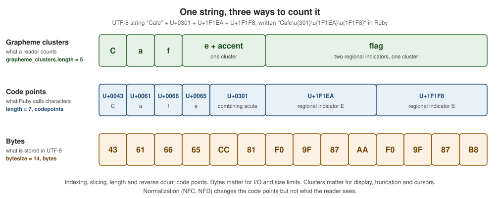

Encodings and Unicode
|
This content was generated with the assistance of AI and should be verified against the official documentation before being relied on in production. |
This page is written against Ruby 4.0 (4.0.7, checked on 2026-10-18); features newer than Ruby 3.0 name the version that
introduced them. A Ruby String is a sequence of bytes together with an Encoding that says how those bytes are read as
characters. Most of the time that encoding is UTF-8 and nothing needs to be done, which is exactly why encoding bugs
surface late: when a file written on another system is read, when a name with an accent is compared with a decomposed
copy of itself, when text is cut in the middle of a character, or when a Latin-1 export meets a UTF-8 catalogue.
This page explains the model and every tool Ruby gives to work with it: the Encoding class, where the encoding of a
string comes from, how to relabel (force_encoding) and convert (encode) it, how to find and repair invalid bytes,
how streams transcode, how to count bytes, code points and grapheme clusters, and the Unicode-aware operations of
normalization, case mapping and regular expression properties.
The string methods themselves (slicing, searching, formatting) are in
Strings, literal syntax and escapes in
Literals, symbols (which also carry an encoding) in
Symbols, the regular expression engine in
Regular Expressions, reading and writing files in
IO, Files and Directories, the -E, -U and RUBYOPT
options in Ruby Command Line and Environment, JSON and
Marshal in Serialization: JSON, YAML, CSV and Marshal,
and the security consequences of untrusted bytes in Security. For how other languages
model text, see Go strings, runes and UTF-8,
Rust strings and text,
Python strings and text and
Java strings and text.
Every example on this page was syntax-checked with ruby -wc, run with ruby -w on Ruby 4.0.7 under a UTF-8 locale
(LANG=C.UTF-8) and linted with RuboCop 1.92 using the configuration of the running shelf gem (target Ruby 4.0,
double-quoted strings). The output shown in # => comments, and in the output blocks, is the real output. Where a
result depends on the locale or the operating system, the text says so. Non-ASCII characters inside examples are written
as Unicode escapes (\u{E9} is the letter e with an acute accent) so that the code does not depend on how this page is
edited, normalized or displayed, which is itself a lesson of this page.
The model: bytes, characters and an encoding
Ruby 1.9 replaced the byte-array strings of Ruby 1.8 with strings that know their encoding (Matz’s "M17N", multilingualization).
Every String, Symbol and Regexp has an Encoding, and Ruby makes no attempt to convert everything to one internal
representation, unlike Java or Python 3, which store text in a single Unicode form. A string keeps the bytes it was
created with and the label it was given, and operations interpret the bytes through the label. That has three practical
consequences that the rest of this page elaborates:
-
The same bytes can be different text under different labels, and the same text has different bytes under different encodings.
force_encodingchanges the label,encodechanges the bytes. -
Two strings can only be combined when their encodings are compatible, and nothing is converted silently when they are not.
-
A string can be invalid under its label (bytes that no character maps to), and Ruby keeps working with it until an operation needs to decode it.
The vocabulary used throughout:
| Term | Meaning |
|---|---|
Byte |
An integer in |
Code point |
A number assigned to a character by a character set; Unicode defines code points from U+0000 to U+10FFFF. In UTF-8
a code point takes one to four bytes. |
Character |
What |
Grapheme cluster |
What a reader perceives as one character: a base letter with its combining marks, an emoji sequence, a flag. Several code
points can make one cluster. |
Encoding |
The mapping between bytes and characters (UTF-8, ISO-8859-1, Shift_JIS), represented by an |
Transcoding |
Converting a string from one encoding to another, producing different bytes for the same characters ( |
Normalization |
Choosing between canonically equivalent Unicode spellings of the same text, such as a precomposed letter or a letter followed by a combining mark ( |
One string, three counts
The next figure shows a single string seen as bytes, code points and grapheme clusters. The string is the word "Cafe" followed by a combining acute accent (the decomposed spelling of "Café") and the Spanish flag, which Unicode writes as two regional indicator symbols. It has 14 bytes, 7 code points and 5 grapheme clusters.

The code below makes the same point in Ruby. length counts code points, bytesize counts bytes and
grapheme_clusters.length counts what a reader sees. The precomposed and decomposed spellings of the same word differ in
length, bytes and equality, but normalize to each other.
# frozen_string_literal: true
precomposed = "Caf\u{E9}"
decomposed = "Cafe\u{301}"
# Characters (code points), bytes and grapheme clusters are three different counts.
precomposed.length # => 4
precomposed.bytesize # => 5
decomposed.length # => 5
decomposed.bytesize # => 6
decomposed.grapheme_clusters.length # => 4
precomposed.codepoints # => [67, 97, 102, 233]
decomposed.codepoints # => [67, 97, 102, 101, 769]
precomposed.bytes # => [67, 97, 102, 195, 169]
decomposed.bytes # => [67, 97, 102, 101, 204, 129]
# Two strings that look identical but are different sequences of code points.
precomposed.eql?(decomposed) # => false
precomposed.unicode_normalize(:nfd).eql?(decomposed) # => true
precomposed.eql?(decomposed.unicode_normalize(:nfc)) # => true
# One user-perceived character can be many code points.
family = "\u{1F468}\u{200D}\u{1F469}\u{200D}\u{1F467}"
family.length # => 5
family.bytesize # => 18
family.grapheme_clusters.length # => 1
family.codepoints.map { |cp| format("U+%04X", cp) } # => ["U+1F468", "U+200D", "U+1F469", "U+200D", "U+1F467"]
flag = "\u{1F1EA}\u{1F1F8}"
flag.length # => 2
flag.grapheme_clusters.length # => 1Two consequences follow directly. First, String#== and eql? compare bytes (after checking compatibility), not text,
so two strings that render identically can be unequal; normalization, covered below, is the repair. Second, every
operation that cuts or measures text has to decide which of the three units it means: length, [], slice, reverse
and center work on code points, bytesize and byteslice on bytes, and truncating for display belongs to grapheme
clusters.
The Encoding class
An Encoding is a constant-backed singleton: there is exactly one object per encoding, found as a constant
(Encoding::UTF_8, Encoding::ISO_8859_1), by name (Encoding.find("utf-8")) or from a string ("x".encoding).
Encoding.list has 103 entries in Ruby 4.0.7 and Encoding.name_list 175 names, because many encodings have aliases.
The class has no public constructor, and Encoding#replicate, deprecated in Ruby 3.2, was removed in Ruby 3.3.
Names, aliases and lookup
Encoding#name returns the canonical name, names the name plus every alias (including the dynamic aliases locale,
external and filesystem of the encodings currently playing those roles), to_s the name and inspect a readable form.
Encoding.find takes a name, an alias (case-insensitively), the special names external, internal, locale and
filesystem, or an Encoding, and raises ArgumentError for an unknown name; Encoding.aliases is a hash of every alias
to its canonical name.
The name of the binary encoding is a long-standing source of confusion. Its canonical name is still "ASCII-8BIT" for
compatibility, BINARY is an alias, and since Ruby 3.4 inspect prints #<Encoding:BINARY (ASCII-8BIT)> (earlier
versions printed #<Encoding:ASCII-8BIT>). A BINARY string is "bytes with no text meaning": String#b and
String.new without an encoding produce it, and binary reads (File.binread, mode "rb") return it. It is not
"ASCII with 8 bits"; do not read it as text.
# frozen_string_literal: true
Encoding.list.size # => 103
Encoding.name_list.size # => 175
Encoding::UTF_8.name # => "UTF-8"
Encoding::UTF_8.names # => ["UTF-8", "CP65001", "locale", "external", "filesystem"]
Encoding::UTF_8.to_s # => "UTF-8"
Encoding::UTF_8.inspect # => "#<Encoding:UTF-8>"
# ASCII-8BIT was renamed BINARY in the display (3.4); both names find the same object.
Encoding::BINARY.inspect # => "#<Encoding:BINARY (ASCII-8BIT)>"
Encoding::BINARY.equal?(Encoding::ASCII_8BIT) # => true
Encoding::BINARY.name # => "ASCII-8BIT"
Encoding::BINARY.names # => ["ASCII-8BIT", "BINARY"]
# Lookup is case-insensitive and understands aliases and the special names.
Encoding.find("utf-8").name # => "UTF-8"
Encoding.find("CP1252").name # => "Windows-1252"
Encoding.aliases["SJIS"] # => "Windows-31J"
Encoding.find("locale").name # => "UTF-8"
Encoding.find("external").name # => "UTF-8"
Encoding.find("internal") # => nil
Encoding.find(Encoding::UTF_8).name # => "UTF-8"
begin
Encoding.find("utf-9")
rescue ArgumentError => e
e.message # => "unknown encoding name - utf-9"
end
# Properties used when deciding whether two strings can be combined.
Encoding::UTF_8.ascii_compatible? # => true
Encoding::UTF_16LE.ascii_compatible? # => false
Encoding::UTF_16.dummy? # => true
Encoding::UTF_8.dummy? # => false
Encoding::ISO_2022_JP.dummy? # => trueSource: Ruby 4.0 documentation: Encoding and Encodings
ASCII-compatible, dummy and Unicode encodings
Three properties of an encoding matter when Ruby decides what to do with it.
| Property | Meaning |
|---|---|
ASCII-compatible ( |
The bytes |
Dummy ( |
A placeholder for an encoding that Ruby cannot process character by character, because it is stateful or needs a byte
order mark. |
Unicode encoding |
|
UTF-8 is the encoding to use for text storage and exchange: it is ASCII-compatible, self-synchronizing (a decoder can find the start of the next character after an error), has no byte order and is the default of Ruby, JSON, the web and most operating systems. The legacy encodings (ISO-8859-1, Windows-1252, Shift_JIS, EUC-JP, GB2312, KOI8-R) are needed to read old data and talk to old systems, and are converted to UTF-8 at the boundary of the program.
Where an encoding comes from
A string gets its encoding from one of five places, which are worth knowing in this order because they explain every
surprise: the source encoding of the file that contains a literal, the external encoding of the stream a string was
read from, the internal encoding a stream converts to, the locale of the process, and an explicit
operation (encode, force_encoding, String.new(encoding:), pack, Integer#chr).
Source encoding and the encoding magic comment
The encoding of a Ruby source file is its script encoding, available as __ENCODING__. The default is UTF-8 (since
Ruby 2.0; Ruby 1.9 defaulted to US-ASCII, which is why older code starts with # encoding: utf-8). A magic comment on the
first line, or on the second line when the first is a shebang, changes it; a comment further down, or one placed after
a frozen_string_literal line, is silently ignored. The comment must contain coding or
encoding, a colon or equals sign, and the name of an encoding; the Emacs form # -*- coding: iso-8859-1 -*- and the Vim
form # vim: set fileencoding=iso-8859-1 : are recognized too. The comment applies to the whole file, and each file has its
own, so a require`d file does not inherit the encoding of its caller. Code given with `-e, on standard input, or
to eval uses the locale encoding or the encoding of the string being evaluated rather than UTF-8.
In a UTF-8 file the magic comment is redundant, and RuboCop (Style/Encoding) flags it. It is only needed to read a
file that really is in another encoding, and the better fix is to convert such a file to UTF-8. Source bytes
that are not valid in the script encoding are a syntax error ("invalid multibyte character" for a UTF-8 file containing a
stray Latin-1 byte), which is the one place where Ruby refuses invalid bytes outright.
The script encoding labels every literal that has no escape forcing something else. The rules are:
-
A string literal with only ASCII characters and escapes takes the script encoding. A string with non-ASCII source characters takes the script encoding too.
-
A
\u{...}escape (one or several space-separated code points) makes the literal UTF-8, whatever the script encoding. Mixing a\uescape with a high-byte\xescape in one literal is a syntax error when the script is not UTF-8 ("UTF-8 mixed within ISO-8859-1 source"); in a UTF-8 file it is accepted and yields an invalid string. -
A
\xNNescape for a byte above0x7Fkeeps the script encoding in a UTF-8 file, which may leave the string invalid ("caf\xE9"in a UTF-8 file). In a US-ASCII script it makes the string BINARY. -
A symbol or regexp literal with only ASCII characters is US-ASCII; otherwise it takes the script encoding (or UTF-8 with
\uescapes). Regexp flags/n,/u,/eand/sfix the encoding to US-ASCII or BINARY, UTF-8, EUC-JP and Windows-31J. -
An interpolated string is built piece by piece with the compatibility rules of the next sections.
The first example is a normal file (UTF-8, no magic comment), including the encodings of String.new in its forms:
# frozen_string_literal: true
# No magic comment: the script encoding of a file is UTF-8 (since Ruby 2.0).
__ENCODING__.name # => "UTF-8"
"abc".encoding # => #<Encoding:UTF-8>
"caf\u{E9}".encoding # => #<Encoding:UTF-8>
"caf\xC3\xA9".encoding # => #<Encoding:UTF-8>
"caf\xC3\xA9".valid_encoding? # => true
"caf\xE9".encoding # => #<Encoding:UTF-8>
"caf\xE9".valid_encoding? # => false
:abc.encoding # => #<Encoding:US-ASCII>
label = "caf\u{E9}"
label.to_sym.encoding # => #<Encoding:UTF-8>
/abc/.encoding # => #<Encoding:US-ASCII>
/caf\u{E9}/.encoding # => #<Encoding:UTF-8>
"caf\u{E9}".b.encoding # => #<Encoding:BINARY (ASCII-8BIT)>
String.new.encoding # => #<Encoding:BINARY (ASCII-8BIT)>
String.new("").encoding # => #<Encoding:UTF-8>
String.new(capacity: 16).encoding # => #<Encoding:BINARY (ASCII-8BIT)>
String.new(encoding: "UTF-8").encoding # => #<Encoding:UTF-8>Source: Ruby 4.0 documentation: Comments and Literals
The next file declares ISO-8859-1. It shows that a \xE9 escape is now a valid Latin-1 é, that the label follows
the file and not the process, and that \u escapes still give UTF-8.
# encoding: iso-8859-1
# frozen_string_literal: true
# The script encoding decides how string, symbol and regexp literals are labelled.
__ENCODING__.name # => "ISO-8859-1"
"abc".encoding # => #<Encoding:ISO-8859-1>
"caf\xE9".encoding # => #<Encoding:ISO-8859-1>
"caf\xE9".valid_encoding? # => true
"caf\xE9".encode("UTF-8") # => "café"
"caf\u{E9}".encoding # => #<Encoding:UTF-8>
:abc.encoding # => #<Encoding:US-ASCII>
label = "caf\xE9"
label.to_sym.encoding # => #<Encoding:ISO-8859-1>
/abc/.encoding # => #<Encoding:US-ASCII>Source: Ruby 4.0 documentation: Comments
In a US-ASCII script, a literal with a high byte escape is BINARY and a literal with a Unicode escape is UTF-8:
# encoding: us-ascii
# frozen_string_literal: true
__ENCODING__.name # => "US-ASCII"
"abc".encoding # => #<Encoding:US-ASCII>
"abc\u{E9}".encoding # => #<Encoding:UTF-8>
"abc\xE9".encoding # => #<Encoding:BINARY (ASCII-8BIT)>
"abc\xE9".valid_encoding? # => true
:abc.encoding # => #<Encoding:US-ASCII>Non-ASCII characters are legal in identifiers (def café works in a UTF-8 file), but RuboCop’s
Style/AsciiIdentifiers discourages them for portability. The frozen_string_literal magic comment interacts with encodings in one place:
force_encoding, encode!, scrub! and unicode_normalize! modify their receiver, so on a literal they raise FrozenError
when the literals are frozen, and warn with -W:deprecated (literal string will be frozen in the future) on the chilled
literals of Ruby 3.4 and 4.0. Dup the string first, as the examples do.
External, internal, locale and filesystem encodings
Outside the source, Ruby tracks four process-wide defaults:
| Name | Role |
|---|---|
Locale encoding ( |
The encoding of the environment: command-line arguments ( |
Default external encoding ( |
The label given to bytes read from a stream in text mode, and the encoding expected for bytes written. It starts as the locale encoding, except on Windows, where it is UTF-8 since Ruby 3.0. |
Default internal encoding ( |
|
Filesystem encoding ( |
The encoding of file and directory names returned by |
The locale gives the starting values. The command-line options -E ext[:int] (alias --encoding),
--external-encoding and --internal-encoding override them, and so do the same options carried by the RUBYOPT
environment variable, with the command line winning over RUBYOPT (checked: RUBYOPT=-EISO-8859-1 ruby -E UTF-8 gives UTF-8).
Assigning Encoding.default_external= or default_internal= at run time overrides everything. -U sets the internal encoding to UTF-8, and the
legacy -K flag (-Ku for UTF-8, -Ke for EUC-JP, -Ks for Windows-31J) sets the script and external encodings the old
Japanese way; neither is listed by ruby --help. The -E option also accepts only the external part (-E ISO-8859-1) or only the internal part (-E :UTF-8).
A script that prints the three values shows the effect of each source (output captured on macOS with Ruby 4.0.7):
# frozen_string_literal: true
p Encoding.default_external, Encoding.default_internal, __ENCODING__$ LC_ALL=C ruby show.rb
#<Encoding:US-ASCII>
nil
#<Encoding:UTF-8>
$ LC_ALL=C.UTF-8 ruby show.rb
#<Encoding:UTF-8>
nil
#<Encoding:UTF-8>
$ LC_ALL=C.UTF-8 ruby -E ISO-8859-1:UTF-8 show.rb
#<Encoding:ISO-8859-1>
#<Encoding:UTF-8>
#<Encoding:UTF-8>
$ LC_ALL=C ruby --external-encoding=UTF-8 show.rb
#<Encoding:UTF-8>
nil
#<Encoding:UTF-8>
$ LC_ALL=C.UTF-8 ruby -U show.rb
#<Encoding:UTF-8>
#<Encoding:UTF-8>
#<Encoding:UTF-8>
$ RUBYOPT=-EUTF-8 LC_ALL=C ruby show.rb
#<Encoding:UTF-8>
nil
#<Encoding:UTF-8>
$ ruby -Ke show.rb
#<Encoding:EUC-JP>
nil
#<Encoding:EUC-JP>
$ LC_ALL=C ruby -e 'p __ENCODING__'
#<Encoding:US-ASCII>The first and last runs show the two classic traps. With a C locale the external encoding is US-ASCII, so a program that
reads a UTF-8 file produces strings labelled US-ASCII that are invalid as soon as a non-ASCII byte appears (the
common failure of a program that works on a laptop and breaks in a Docker container or a cron job). And -e code takes
its script encoding from the locale, while a file is always UTF-8 unless it says otherwise.
Encoding.default_external= and default_internal= are legal at run time, and warn under -w ("setting
Encoding.default_external"), because they change the behaviour of every IO object and every library loaded in the process,
including strings created before the change, which keep their old label. Applications set them once at startup, or
use the command-line options so that the setting precedes all code; libraries should never set them. The robust
approach for a library is to not depend on the defaults at all and to name the encoding at every boundary
(File.read(path, encoding: "UTF-8"), String#encode).
Standard streams, ARGV and ENV
ARGV and ENV strings carry the locale encoding; $stdin reads with the default external (and internal) encoding; $stdout and
$stderr have no external encoding ($stdout.external_encoding is nil), so puts writes the string’s bytes unchanged and
a string in another encoding reaches the terminal as it is, unless the stream was told to convert. Whether the bytes look right
is then decided by the terminal, not by Ruby. Setting an external encoding on the stream converts on write:
# frozen_string_literal: true
$stdout.set_encoding("ISO-8859-1")
puts "caf\u{E9}"$ ruby out.rb | od -An -c
c a f 351 \nA script that reports the encodings of its arguments and environment, run with a UTF-8 locale and with a C locale:
# frozen_string_literal: true
p ARGV.first, ARGV.first.encoding, ENV.fetch("SHELF_OWNER").encoding
p Encoding.default_external, $stdout.external_encoding$ SHELF_OWNER=García LC_ALL=C.UTF-8 ruby argv.rb Zoë
"Zoë"
#<Encoding:UTF-8>
#<Encoding:UTF-8>
#<Encoding:UTF-8>
nil
$ SHELF_OWNER=Garcia LC_ALL=C ruby argv.rb Zoe
"Zoe"
#<Encoding:US-ASCII>
#<Encoding:US-ASCII>
#<Encoding:US-ASCII>
nilReading standard input shows the difference between a label and a conversion. The same Latin-1 byte (0xE9) arrives as an
invalid UTF-8 string by default, as a valid ISO-8859-1 string with -E ISO-8859-1, and as a converted UTF-8 string with
-E ISO-8859-1:UTF-8:
# frozen_string_literal: true
line = $stdin.gets
p line.encoding, line.valid_encoding?, line.bytes
p $stdin.external_encoding, $stdin.internal_encoding$ printf 'caf\351\n' | LC_ALL=C.UTF-8 ruby stdin.rb
#<Encoding:UTF-8>
false
[99, 97, 102, 233, 10]
#<Encoding:UTF-8>
nil
$ printf 'caf\351\n' | LC_ALL=C.UTF-8 ruby -E ISO-8859-1 stdin.rb
#<Encoding:ISO-8859-1>
true
[99, 97, 102, 233, 10]
#<Encoding:ISO-8859-1>
nil
$ printf 'caf\351\n' | LC_ALL=C.UTF-8 ruby -E ISO-8859-1:UTF-8 stdin.rb
#<Encoding:UTF-8>
true
[99, 97, 102, 195, 169, 10]
#<Encoding:ISO-8859-1>
#<Encoding:UTF-8>Source: Ruby 4.0 documentation: IO
Strings and their encodings
Compatibility and concatenation
Two strings can be joined (+, <<, interpolation, Array#join, format, regexp matching, comparison) when their
encodings are compatible. Encoding.compatible?(a, b) answers the question without raising: it returns the Encoding
the combined string would have, or nil. The rules, in the order Ruby applies them:
-
If both strings have the same encoding, the result has it.
-
If one string is empty, the other’s encoding wins.
-
If both encodings are ASCII-compatible and one string is ASCII-only, the result takes the encoding of the other (the ASCII-only string is "neutral").
-
If both are ASCII-only, the left one’s encoding is used.
-
Otherwise they are incompatible:
Encoding::CompatibilityError("incompatible character encodings: UTF-8 and ISO-8859-1").
Encoding.compatible? also accepts Symbols, Regexps, Encodings and other objects with an encoding, and returns nil for
objects that have none (an Integer). The same rule produces the regexp-match error "incompatible encoding regexp match".
# frozen_string_literal: true
utf8 = "caf\u{E9}"
latin1 = utf8.encode("ISO-8859-1")
ascii = "cafe"
# ASCII-only strings are compatible with every ASCII-compatible encoding.
Encoding.compatible?(utf8, ascii) # => #<Encoding:UTF-8>
Encoding.compatible?(ascii, latin1) # => #<Encoding:ISO-8859-1>
Encoding.compatible?(utf8, latin1) # => nil
Encoding.compatible?("", latin1) # => #<Encoding:ISO-8859-1>
Encoding.compatible?(utf8, :cafe) # => #<Encoding:UTF-8>
Encoding.compatible?(utf8, 42) # => nil
(ascii + latin1).encoding # => #<Encoding:ISO-8859-1>
(utf8 + ascii).encoding # => #<Encoding:UTF-8>
# Two non-ASCII strings in different encodings cannot be combined.
begin
utf8 + latin1
rescue Encoding::CompatibilityError => e
e.message # => "incompatible character encodings: UTF-8 and ISO-8859-1"
end
begin
"#{utf8} - #{latin1}"
rescue Encoding::CompatibilityError => e
e.message # => "incompatible character encodings: UTF-8 and ISO-8859-1"
end
begin
[utf8, latin1].join
rescue Encoding::CompatibilityError => e
e.message # => "incompatible character encodings: UTF-8 and ISO-8859-1"
end
# Same characters, different bytes: not equal, and not the same hash key.
latin1.bytes # => [99, 97, 102, 233]
utf8.bytes # => [99, 97, 102, 195, 169]
utf8.eql?(latin1) # => false
{ utf8 => 1 }.key?(latin1) # => false
# ASCII-only strings compare equal across ASCII-compatible encodings.
ascii.eql?(ascii.encode("ISO-8859-1")) # => true
ascii.eql?(ascii.encode("UTF-16LE")) # => false
ascii.hash.eql?(ascii.b.hash) # => true
utf8.eql?(utf8.b) # => false
# Appending an Integer appends a code point in the receiver's encoding.
(+"" << 0x1F600).encoding # => #<Encoding:UTF-8>
(+"".b << 233).bytes # => [233]
(+"x".encode("US-ASCII") << 233).encoding # => #<Encoding:BINARY (ASCII-8BIT)>Three details of the example repay attention. ASCII-only strings are portable across ASCII-compatible encodings, which is
why code that handles only English text never meets these errors, and why the first non-ASCII character in production data
is where they begin. Equality is strict: two strings are == only when they are comparable, that is, when they have the same
encoding or are both ASCII-only in ASCII-compatible encodings, and their bytes are equal; the same text in Latin-1 and UTF-8 is
unequal and is a different Hash key, and so is a BINARY copy of a non-ASCII string. And String#<< with an Integer appends a
code point in the receiver’s encoding, switching a US-ASCII receiver to BINARY when the value is above 127.
The error is raised at the point of mixing, which may be far from where the bad string entered the program. The fix is never to rescue it, but to convert every input to UTF-8 at the boundary so that mixing never happens.
Creating strings with a given encoding
A new string gets its encoding from its source: the script encoding for literals; the receiver’s for dup, +@ and most
methods; BINARY for String.new with no arguments or only capacity:, and for String#b; the argument’s for
String.new("text"); the given one for String.new(encoding: enc). Integer#chr with no argument returns US-ASCII below
128 and BINARY from 128 to 255, and raises RangeError above 255; give it an encoding for larger code points
(233.chr("UTF-8") is "é", while 233.chr is the single byte 0xE9). Array#pack returns BINARY for byte directives (C, a), UTF-8 for U and US-ASCII for
text directives such as m (Base64). String#unpack/unpack1 with U decode UTF-8 to code points and raise
ArgumentError ("malformed UTF-8 character") on invalid input.
# frozen_string_literal: true
# Unicode escapes: \u{...} takes one or more code points separated by spaces.
"\u{48 49}".codepoints # => [72, 73]
"\u{1F600}".bytes # => [240, 159, 152, 128]
"\u{1F600}".encoding # => #<Encoding:UTF-8>
?\u{E9}.bytes # => [195, 169]
# String#ord and Integer#chr convert between a character and its code point.
"\u{E9}".ord # => 233
233.chr(Encoding::UTF_8) # => "é"
0x1F600.chr("UTF-8") # => "😀"
65.chr.encoding # => #<Encoding:US-ASCII>
233.chr.encoding # => #<Encoding:BINARY (ASCII-8BIT)>
233.chr.valid_encoding? # => true
outcomes = [
-> { 0x1F600.chr },
-> { 0x110000.chr("UTF-8") },
-> { 0xD800.chr("UTF-8") },
-> { "".ord },
-> { "\xFF".ord }
].map do |attempt|
attempt.call
rescue StandardError => e
"#{e.class}: #{e.message}"
end
outcomes.to_a
# => ["RangeError: 128512 out of char range", "RangeError: 1114112 out of char range",
# "RangeError: invalid codepoint 0xD800 in UTF-8", "ArgumentError: empty string",
# "ArgumentError: invalid byte sequence in UTF-8"]
# pack and unpack use "U" for UTF-8 code points and "C" for bytes.
"na\u{EF}ve".unpack("U*") # => [110, 97, 239, 118, 101]
"na\u{EF}ve".unpack("C*") # => [110, 97, 195, 175, 118, 101]
[110, 97, 239, 118, 101].pack("U*") # => "naïve"
[110, 97, 239, 118, 101].pack("C*").encoding # => #<Encoding:BINARY (ASCII-8BIT)>
[110, 97, 239, 118, 101].pack("U*").encoding # => #<Encoding:UTF-8>
["abc"].pack("m0").encoding # => #<Encoding:US-ASCII>
# Iterating the three views of a string.
text = "Cafe\u{301}"
text.each_char.to_a # => ["C", "a", "f", "e", "́"]
text.each_codepoint.to_a # => [67, 97, 102, 101, 769]
text.each_grapheme_cluster.to_a # => ["C", "a", "f", "é"]
text.each_byte.to_a.length # => 6Source: Ruby 4.0 documentation: Integer#chr and Packed data
A Unicode escape accepts several code points separated by spaces, and the same notation works in character literals (?\u{E9}).
ord is the inverse of chr and raises on an empty string or an invalid first character. Code points
U+D800 to U+DFFF (surrogates) and above U+10FFFF are never valid in Ruby’s UTF-8.
force_encoding, encode and b
These three are the most misused methods in this area, and the difference is the center of the topic: relabel versus convert.
| Method | Bytes | Encoding label |
|---|---|---|
|
Unchanged. Modifies the receiver and returns it. |
Set to |
|
Converted: new bytes for the same characters. Returns a new string ( |
|
|
Unchanged. Returns a copy. |
BINARY. Always valid. |
|
Invalid sequences replaced. |
Unchanged. |
|
Converted to another spelling of the same text. |
Unchanged (Unicode encodings only). |
Use force_encoding when the bytes are right and only the label is wrong: the typical case is bytes that came out of
a binary source (a socket, a Digest, a pack, a C extension, a database driver) that are known to hold UTF-8 text.
Use encode when the bytes are in a known encoding other than the one needed. The expensive mistake is to do
force_encoding when the text really is in another encoding: the bytes are valid-looking but mean different characters, or
invalid, and the damage is discovered later. The reverse mistake, encode from the wrong source encoding, produces
mojibake: UTF-8 bytes interpreted as Latin-1 and converted turn "é" into "é", and nothing raises.
# frozen_string_literal: true
# Bytes as they arrive from a binary read of a Latin-1 export.
raw = "caf\xE9".b
raw.encoding # => #<Encoding:BINARY (ASCII-8BIT)>
raw.valid_encoding? # => true
# force_encoding relabels the same bytes. Nothing is converted.
labelled = raw.dup.force_encoding("ISO-8859-1")
labelled.encoding # => #<Encoding:ISO-8859-1>
labelled.bytes # => [99, 97, 102, 233]
# encode converts: new bytes for the same characters.
text = labelled.encode("UTF-8")
text.to_s # => "café"
text.bytes # => [99, 97, 102, 195, 169]
# Naming the source encoding converts straight from a binary string.
raw.encode("UTF-8", "ISO-8859-1") # => "café"
# BINARY has no characters to convert, so encode refuses.
begin
raw.encode("UTF-8")
rescue Encoding::UndefinedConversionError => e
e.message # => "\"\\xE9\" from ASCII-8BIT to UTF-8"
e.error_char # => "\xE9"
e.source_encoding_name # => "ASCII-8BIT"
e.destination_encoding_name # => "UTF-8"
end
# The classic mojibake: UTF-8 bytes relabelled as Latin-1, then "converted".
utf8 = "caf\u{E9}"
mojibake = utf8.dup.force_encoding("ISO-8859-1").encode("UTF-8")
mojibake.to_s # => "café"
mojibake.length # => 5
# Bytes relabelled with the wrong encoding may be invalid.
wrong = raw.dup.force_encoding("UTF-8")
wrong.valid_encoding? # => false
wrong.inspect # => "\"caf\\xE9\""
# A frozen string cannot be relabelled; dup it first.
begin
"caf".force_encoding("BINARY")
rescue FrozenError => e
e.message # => "can't modify frozen String: \"caf\""
end
# Unknown names fail early.
begin
"x".encode("nope")
rescue Encoding::ConverterNotFoundError => e
e.message # => "code converter not found (UTF-8 to nope)"
end
# Transcoding to the same encoding is a copy, not a validation.
same = utf8.encode("UTF-8")
same.equal?(utf8) # => false
same.eql?(utf8) # => trueA few rules of thumb come out of this:
-
force_encodingmutates, so it needs an unfrozen string. On a literal in a file withfrozen_string_literal: trueit raisesFrozenError; on a chilled literal it warns under-W:deprecated. Callduporbfirst. -
encodewith no source argument uses the string’s own encoding as the source. To convert bytes labelled BINARY, name the real source (raw.encode("UTF-8", "ISO-8859-1")); without it, Ruby treats every byte above 127 as an error. -
Encoding to the encoding a string already has is a copy that does not check the bytes. In Ruby 4.0 passing
invalid: :replace(orundef: :replace) with the same encoding does scrub, butscrubsays what it means. -
encodeis not a validator,valid_encoding?is. -
String#bis the way to get a byte view that cannot raise: slicing,unpackandbytespliceon a BINARY copy work on bytes and never meet an encoding error.
Invalid byte sequences
A string is valid when its bytes form well-formed characters in its encoding. valid_encoding? tests that, and
ascii_only? tests that all bytes are below 128. Ruby caches the result per string (a "coderange"), so asking twice is cheap,
but any change to the string invalidates the cache. BINARY, US-ASCII (while ASCII-only) and single-byte encodings such
as ISO-8859-1 are always valid; invalid strings appear in UTF-8, UTF-16 and the multibyte Asian encodings.
Ruby does not validate when a string is created or labelled: it validates when an operation has to decode the bytes. That is
why one invalid byte can travel through a whole program and fail at the first split, regexp match or upcase. The next
example shows a name read as Latin-1 but labelled UTF-8, the invalid string a bad import produces:
# frozen_string_literal: true
# Latin-1 bytes inside a string that Ruby labels as UTF-8.
broken = "Gabriel Garc\xEDa M\xE1rquez"
broken.encoding # => #<Encoding:UTF-8>
broken.valid_encoding? # => false
broken.length # => 22
broken.bytesize # => 22
# Some methods keep working on invalid strings, others raise.
broken.include?("Garc") # => true
broken.index("M") # => 15
broken.start_with?("Gab") # => true
broken.reverse # => "zeuqr\xE1M a\xEDcraG leirbaG"
outcomes = [
-> { broken.split },
-> { broken.match?(/Garc/) },
-> { broken =~ /Garc/ },
-> { broken.upcase },
-> { broken.unicode_normalize },
-> { broken.unpack("U*") },
-> { broken.to_sym }
].map do |attempt|
attempt.call
rescue StandardError => e
"#{e.class}: #{e.message}"
end
outcomes.to_a
# => ["ArgumentError: invalid byte sequence in UTF-8", "ArgumentError: invalid byte sequence in UTF-8",
# "ArgumentError: invalid byte sequence in UTF-8", "ArgumentError: input string invalid",
# "ArgumentError: invalid byte sequence in UTF-8", "ArgumentError: malformed UTF-8 character",
# "EncodingError: invalid symbol in encoding UTF-8 :\"Gabriel Garc\\xEDa M\\xE1rquez\""]
# scrub replaces invalid byte sequences: U+FFFD by default for Unicode encodings.
broken.scrub # => "Gabriel Garc�a M�rquez"
broken.scrub("?") # => "Gabriel Garc?a M?rquez"
broken.scrub("") # => "Gabriel Garca Mrquez"
broken.scrub { |bytes| format("<%02X>", bytes.unpack1("C")) } # => "Gabriel Garc<ED>a M<E1>rquez"
broken.scrub.valid_encoding? # => true
# scrub! changes the receiver, so the string must not be frozen.
copy = broken.dup
copy.scrub!("?")
copy.to_s # => "Gabriel Garc?a M?rquez"
# A multibyte character cut short is one invalid sequence, not several.
"caf\xC3".scrub("?") # => "caf?"
"\xE2\x82".scrub("?") # => "?"
"\xE2\x82\xAC".byteslice(0, 2).scrub("?") # => "?"
"\xE2\x82\xAC".byteslice(0, 2).scrub("?").length # => 1
# encode with invalid: :replace also scrubs, and so does a round trip through UTF-16.
broken.encode("UTF-8", invalid: :replace, replace: "?") # => "Gabriel Garc?a M?rquez"
# A BINARY string is always valid: there is nothing to scrub.
broken.b.valid_encoding? # => true
broken.b.scrub.equal?(broken.b) # => falseWhat works on an invalid string and what does not is worth memorizing:
| Operation on an invalid UTF-8 string | Result |
|---|---|
|
Works; each invalid byte counts as one character. |
|
|
|
|
|
|
|
|
|
|
|
|
Repairing with scrub
scrub returns a copy with each maximal invalid sequence replaced by a replacement string: U+FFFD (the replacement
character) for Unicode encodings and ? otherwise, or the argument, or the result of a block that receives the invalid
bytes. scrub! does it in place and needs an unfrozen string. A multibyte character that was cut short counts as one invalid
sequence and gives one replacement, as the euro sign cut after two of its three bytes shows. Choose the replacement
deliberately: U+FFFD makes damage visible, "" silently drops data, a block can record what was lost
(broken.scrub { |bytes| bytes.unpack1("H*") }).
scrub only repairs syntax. It cannot recover the text: "Garc\xEDa" was Latin-1 and the right repair is
force_encoding("ISO-8859-1").encode("UTF-8") when the source encoding is known. When it is not, detection is heuristic
(the charlock_holmes and rchardet gems exist; Ruby does not guess) and the safest policy is to reject, or
scrub with visible U+FFFD and report, at the boundary.
The exceptions
All encoding exceptions inherit from EncodingError, a StandardError, except the ArgumentError and RangeError that
specific methods raise.
| Exception | Raised when |
|---|---|
|
Two strings (or a string and a regexp) with incompatible encodings are combined, or |
|
A valid character has no equivalent in the destination ( |
|
The source bytes are not valid in the source encoding ( |
|
No converter exists for the pair ("code converter not found (UTF-8 to nope)"). |
|
Itself: |
|
"invalid byte sequence in UTF-8" from regexps, |
|
|
Transcoding
String#encode(dst), encode(dst, src) and encode(**options) convert a string. The documented options, shared by
encode, encode!, IO open options and Encoding::Converter.new:
| Option | Effect |
|---|---|
|
Replace each invalid source sequence instead of raising |
|
Replace each character the destination cannot represent instead of raising |
|
The replacement used by the two options above. Default U+FFFD for Unicode destinations and |
|
Decides per undefined character: a Hash, Proc, Method or any object responding to |
|
Escape |
|
As |
|
Convert CRLF and CR to LF. |
|
Convert LF to CRLF. |
|
Convert LF to CR. |
|
Convert CRLF and CR to LF, like |
The first example uses a menu line that Latin-1 cannot represent completely: it has the accented letters of the language but
neither the em dash nor the euro sign. It shows the exception and each way around it. "Transliteration" is not built in:
decomposing with unicode_normalize(:nfd) and removing the combining marks (\p{M}) is the standard approximation for
accents, and anything else needs a fallback table or a library.
# frozen_string_literal: true
# "Crème brûlée — €5": Latin-1 has the accented letters but neither the dash nor the euro sign.
menu = "Cr\u{E8}me br\u{FB}l\u{E9}e \u{2014} \u{20AC}5"
begin
menu.encode("ISO-8859-1")
rescue Encoding::UndefinedConversionError => e
e.message # => "U+2014 from UTF-8 to ISO-8859-1"
e.error_char # => "—"
e.source_encoding_name # => "UTF-8"
e.destination_encoding_name # => "ISO-8859-1"
end
# undef: :replace uses "?" for non-Unicode targets and U+FFFD for Unicode ones.
menu.encode("ISO-8859-1", undef: :replace).encode("UTF-8") # => "Crème brûlée ? ?5"
menu.encode("ISO-8859-1", undef: :replace, replace: "*").encode("UTF-8") # => "Crème brûlée * *5"
menu.encode("US-ASCII", undef: :replace, replace: "").to_s # => "Crme brle 5"
# fallback: a Hash, Proc, Method or object responding to [] decides per character.
substitutes = { "\u{2014}" => "-", "\u{20AC}" => "EUR " }
menu.encode("ISO-8859-1", fallback: substitutes).encode("UTF-8") # => "Crème brûlée - EUR 5"
braces = ->(char) { format("{U+%04X}", char.ord) }
menu.encode("ISO-8859-1", fallback: braces).encode("UTF-8") # => "Crème brûlée {U+2014} {U+20AC}5"
# Transliterating to ASCII is not built in: decompose, then drop the marks.
unmarked = menu.unicode_normalize(:nfd).gsub(/\p{M}/, "")
unmarked.encode("US-ASCII", undef: :replace, replace: "?") # => "Creme brulee ? ?5"
# xml: :text escapes & < >; xml: :attr also escapes quotes and adds them around the value.
"Tom & Jerry <\"classic\">".encode(xml: :text) # => "Tom & Jerry <\"classic\">"
"Tom & Jerry <\"classic\">".encode(xml: :attr) # => "\"Tom & Jerry <"classic">\""
"caf\u{E9}".encode("US-ASCII", xml: :text) # => "café"
# Newline conversion options.
"a\r\nb\rc\n".encode(universal_newline: true) # => "a\nb\nc\n"
"a\nb".encode(crlf_newline: true) # => "a\r\nb"
"a\nb".encode(cr_newline: true) # => "a\rb"
"a\r\nb".encode(lf_newline: true) # => "a\nb"
# Unicode targets: UTF-16 and UTF-32 write a byte order mark, the LE and BE variants do not.
"A\u{E9}".encode("UTF-16").bytes # => [254, 255, 0, 65, 0, 233]
"A\u{E9}".encode("UTF-16LE").bytes # => [65, 0, 233, 0]
"A\u{E9}".encode("UTF-16BE").bytes # => [0, 65, 0, 233]
"A\u{E9}".encode("UTF-32LE").bytes # => [65, 0, 0, 0, 233, 0, 0, 0]
"\u{1F600}".encode("UTF-16LE").bytes # => [61, 216, 0, 222]
"A\u{E9}".encode("UTF-16LE").encode("UTF-8") # => "Aé"
# Asian encodings.
"\u{65E5}\u{672C}\u{8A9E}".encode("Shift_JIS").bytes # => [147, 250, 150, 123, 140, 234]
"\u{65E5}\u{672C}\u{8A9E}".encode("EUC-JP").bytes # => [198, 252, 203, 220, 184, 236]
"\u{65E5}\u{672C}\u{8A9E}".encode("Windows-31J").encoding # => #<Encoding:Windows-31J>
# macOS HFS+ stores file names decomposed; the UTF8-MAC converter reproduces that form.
"caf\u{E9}".encode("UTF8-MAC").bytes # => [99, 97, 102, 101, 204, 129]
"caf\u{E9}".encode("UTF8-MAC").encode("UTF-8").eql?("caf\u{E9}") # => trueNotes on the Unicode targets in that example. UTF-16 and UTF-32 (dummy encodings) write a byte order mark, which is
what a file format sometimes wants; for text kept in memory use UTF-16LE or UTF-16BE, which have no BOM and are real
(non-dummy) encodings. A character outside the Basic Multilingual Plane (an emoji) takes a surrogate pair in UTF-16, so
"\u{1F600}".encode("UTF-16LE").length is 1 in Ruby (characters, not code units) while its bytesize is 4; this differs from Java and
JavaScript, whose length counts UTF-16 code units. UTF8-MAC reproduces the decomposed form HFS+ uses for file names. Converting to a
legacy encoding is lossy by design, and the replacement ? is indistinguishable from a real question mark: prefer
failing loudly on data you cannot afford to damage.
Encoding::Converter
String#encode is a convenience over Encoding::Converter, which keeps state between calls. The class is the right tool when
text arrives in chunks (a socket, a large file read in blocks), because a multibyte character split across two chunks must
be held back until it is complete, which encode on each chunk cannot do. It also exposes the conversion path (a pair
of encodings without a direct converter goes through UTF-8) and a low-level primitive_convert that reports why it
stopped instead of raising. The constants INVALID_REPLACE, UNDEF_REPLACE, UNDEF_HEX_CHARREF,
UNIVERSAL_NEWLINE_DECORATOR, CRLF_NEWLINE_DECORATOR, CR_NEWLINE_DECORATOR, LF_NEWLINE_DECORATOR,
XML_TEXT_DECORATOR, XML_ATTR_CONTENT_DECORATOR, XML_ATTR_QUOTE_DECORATOR, PARTIAL_INPUT and AFTER_OUTPUT are the
flag form of the keyword options.
# frozen_string_literal: true
# A converter keeps state, so it can transcode a stream that arrives in arbitrary chunks.
converter = Encoding::Converter.new("ISO-8859-1", "UTF-8")
converter.source_encoding # => #<Encoding:ISO-8859-1>
converter.destination_encoding # => #<Encoding:UTF-8>
converter.convpath # => [[#<Encoding:ISO-8859-1>, #<Encoding:UTF-8>]]
chunks = ["Gabriel Garc", "\xEDa M", "\xE1rquez"].map(&:b)
decoded = chunks.sum("") { |chunk| converter.convert(chunk) } + converter.finish
decoded.to_s # => "Gabriel García Márquez"
# Characters split across chunk boundaries are held back until they are complete.
utf8_stream = Encoding::Converter.new("UTF-8", "UTF-16LE")
euro = "\u{20AC}"
pieces = euro.b.chars
pieces.map { |piece| utf8_stream.convert(piece).bytes } # => [[], [], [172, 32]]
utf8_stream.finish.bytes # => []
# Converters can chain through UTF-8 when no direct converter exists.
steps = Encoding::Converter.search_convpath("ISO-8859-1", "EUC-JP")
steps.map { |pair| pair.map(&:name) } # => [["ISO-8859-1", "UTF-8"], ["UTF-8", "EUC-JP"]]
# Options are the same ones String#encode accepts.
lossy = Encoding::Converter.new("UTF-8", "ISO-8859-1", undef: :replace, replace: "?")
lossy.convert("na\u{EF}ve \u{2603}").encode("UTF-8") # => "naïve ?"
# Errors can be inspected instead of raised, using the low-level API.
strict = Encoding::Converter.new("UTF-8", "ISO-8859-1")
destination = +""
strict.primitive_convert(+"ok \u{2603} not ok", destination) # => :undefined_conversion
destination.encoding # => #<Encoding:ISO-8859-1>
strict.last_error.class # => Encoding::UndefinedConversionError
strict.last_error.message # => "U+2603 from UTF-8 to ISO-8859-1"
strict.primitive_errinfo.first(3) # => [:undefined_conversion, "UTF-8", "ISO-8859-1"]
# Lookup failures.
begin
Encoding::Converter.new("UTF-8", "no-such-encoding")
rescue Encoding::ConverterNotFoundError => e
e.message # => "code converter not found (UTF-8 to no-such-encoding)"
endEncoding::Converter.search_convpath(src, dst) lists the steps, asciicompat_encoding(enc) returns the ASCII-compatible
encoding that a dummy encoding converts through, and primitive_errinfo, last_error, putback and insert_output give
finer control for parsers that need to recover from an error mid-stream.
Encodings and IO
Reading and writing is where the defaults of the previous sections meet files. An IO object has an external encoding
(how the bytes in the file are interpreted) and an optional internal encoding (what strings it hands out). When both are
set and differ, reads transcode external to internal and writes the reverse; when only the external encoding is set, strings
are labelled with it and not converted; when neither is set the defaults apply. Binary mode ("rb", File.binread,
binmode) means BINARY strings, no conversion and no newline translation.
The encodings are named in the mode string ("r:ISO-8859-1:UTF-8"), or with the keywords external_encoding:,
internal_encoding: or encoding: "ext:int", on File.open, File.read, File.write, File.readlines, File.foreach,
IO.popen, CSV.open and friends. IO#set_encoding(ext, int) changes an open stream, IO#external_encoding and
internal_encoding report it, and IO#set_encoding_by_bom (binary mode only) reads a BOM and sets the encoding from it.
A leading bom| in the encoding name ("r:bom|utf-8") removes a BOM and sets the encoding from it.
The first example writes the Latin-1 file that the others read. Writing with encoding: transcodes from the string’s encoding
to the file’s, so the file contains Latin-1 bytes:
# frozen_string_literal: true
require "tmpdir"
Dir.mktmpdir("shelf") do |dir|
latin1_path = File.join(dir, "titles-latin1.txt")
contents = "Cr\u{E8}me br\u{FB}l\u{E9}e\nNa\u{EF}ve Art\n"
# Writing with encoding: transcodes from the string's encoding to the file's.
File.write(latin1_path, contents, encoding: "ISO-8859-1")
File.size(latin1_path) # => 23
File.binread(latin1_path).bytes.first(6) # => [67, 114, 232, 109, 101, 32]
# Without options the bytes are labelled with Encoding.default_external (UTF-8 here).
File.read(latin1_path).encoding # => #<Encoding:UTF-8>
File.read(latin1_path).valid_encoding? # => false
# "external:internal" reads Latin-1 and hands back UTF-8 strings.
File.read(latin1_path, encoding: "ISO-8859-1:UTF-8") # => "Crème brûlée\nNaïve Art\n"
File.read(latin1_path, external_encoding: "ISO-8859-1", internal_encoding: "UTF-8").encoding # => #<Encoding:UTF-8>
File.readlines(latin1_path, chomp: true, encoding: "ISO-8859-1:UTF-8") # => ["Crème brûlée", "Naïve Art"]
endSource: Ruby 4.0 documentation: IO.read and IO.binread
The file is 23 bytes, Crème brûlée with è, û and é as single bytes. Read with the UTF-8 default it comes back
labelled UTF-8 but invalid, the textbook symptom of "the file is not UTF-8". Naming ISO-8859-1:UTF-8 fixes it.
Streams opened with a block close the file for you (see
IO, Files and Directories).
# frozen_string_literal: true
require "tmpdir"
Dir.mktmpdir("shelf") do |dir|
path = File.join(dir, "titles-latin1.txt")
File.write(path, "Cr\u{E8}me br\u{FB}l\u{E9}e\nNa\u{EF}ve Art\n", encoding: "ISO-8859-1")
File.open(path, "r:iso-8859-1:utf-8") do |file|
file.external_encoding # => #<Encoding:ISO-8859-1>
file.internal_encoding # => #<Encoding:UTF-8>
file.gets # => "Crème brûlée\n"
file.gets.encoding # => #<Encoding:UTF-8>
end
# Only an external encoding: no conversion, the string just carries the label.
File.open(path, "r:iso-8859-1") { |file| file.gets.encoding } # => #<Encoding:ISO-8859-1>
# set_encoding changes a stream that is already open.
File.open(path) do |file|
file.external_encoding # => #<Encoding:UTF-8>
file.set_encoding("ISO-8859-1", "UTF-8")
file.read.lines.last # => "Naïve Art\n"
end
# Binary mode: BINARY strings, no newline conversion, no transcoding.
File.open(path, "rb", &:external_encoding) # => #<Encoding:BINARY (ASCII-8BIT)>
File.binread(path).encoding # => #<Encoding:BINARY (ASCII-8BIT)>
endByte order marks need the same care. A UTF-8 BOM (EF BB BF) is not required or recommended, but files saved by some Windows
editors and spreadsheet exports carry it, and it survives as the invisible code point U+FEFF at the start of the first
line, where it breaks comparisons, header names and key lookups. The bom|utf-8 prefix strips it. UTF-16 and UTF-32 files use a
BOM to declare their byte order. Detecting it needs binary mode, because those encodings are not ASCII-compatible: read them with
File.read(path, mode: "rb", encoding: "BOM|UTF-8") (the BOM| prefix finds whichever BOM is present) or open in "rb" and call
set_encoding_by_bom, which returns the detected Encoding or nil. Without binary mode Ruby raises ArgumentError ("ASCII
incompatible encoding needs binmode").
# frozen_string_literal: true
require "tmpdir"
Dir.mktmpdir("shelf") do |dir|
# A UTF-8 byte order mark is data unless the mode asks for it to be removed.
bom_path = File.join(dir, "titles-bom.txt")
File.binwrite(bom_path, "\xEF\xBB\xBFLeft".b)
File.read(bom_path).codepoints.first(2) # => [65279, 76]
File.read(bom_path, encoding: "bom|utf-8").codepoints.first(2) # => [76, 101]
File.open(bom_path, "r:bom|utf-8") { |file| file.read.length } # => 4
# Writing in a different encoding through a mode string.
utf16_path = File.join(dir, "titles-utf16.txt")
File.open(utf16_path, "w:UTF-16LE") { |file| file.write("Na\u{EF}ve") }
File.binread(utf16_path).bytes # => [78, 0, 97, 0, 239, 0, 118, 0, 101, 0]
File.read(utf16_path, encoding: "UTF-16LE:UTF-8") # => "Naïve"
endSource: Ruby 4.0 documentation: IO
Further notes:
-
On Windows, text mode (the default) translates
"\r\n"to"\n"on read and back on write;"rb"and"wb"do not, and the default external encoding is UTF-8 since Ruby 3.0, so the old advice to write"r:bom|utf-8"and"w:utf-8"explicitly is less necessary and still harmless. -
StringIOhas the same external/internal behaviour for itsset_encodingandnewmode strings. -
ARGF(the files named on the command line) follows the defaults of the process and hasset_encodingtoo. -
IO.popenreads the output of a command in the default external encoding, which is the locale’s: a UTF-8 child talking to a parent withLC_ALL=Cproduces strings labelled US-ASCII. -
Writing a string in an encoding different from the stream’s external encoding converts when the stream has an external encoding set, and writes the bytes unchanged otherwise, which is the usual way files silently end up with mixed encodings.
-
Directory entries (
Dir.children,Dir.glob,File.basename) are labelled with the filesystem encoding; a name that is not valid in it stays invalid, andFile.openaccepts it as bytes. See IO, Files and Directories for path handling.
JSON and Marshal follow their own rules, which is the practical reason to know the model. JSON text is UTF-8 by definition, so
JSON.generate converts other encodings and rejects invalid bytes, and JSON.parse returns UTF-8 strings. Marshal preserves
the encoding of every string it dumps, so it round-trips Latin-1 as Latin-1.
# frozen_string_literal: true
require "json"
# JSON text is UTF-8: other encodings are transcoded, invalid bytes are refused.
latin1 = "caf\u{E9}".encode("ISO-8859-1")
JSON.generate(latin1) # => "\"café\""
JSON.generate("caf\u{E9}", ascii_only: true) # => "\"caf\\u00e9\""
JSON.parse(JSON.generate(latin1)).encoding # => #<Encoding:UTF-8>
JSON.parse("\"caf\\u00e9\"") # => "café"
begin
JSON.generate("caf\xE9")
rescue JSON::GeneratorError => e
e.message # => "source sequence is illegal/malformed utf-8"
end
# Marshal keeps the encoding of every string it dumps.
Marshal.load(Marshal.dump(latin1)).encoding # => #<Encoding:ISO-8859-1>
Marshal.load(Marshal.dump("caf\u{E9}")).encoding # => #<Encoding:UTF-8>Source: Ruby 4.0 documentation: JSON, JSON::GeneratorError and Marshal
Bytes, code points and grapheme clusters
The byte-level API
The methods that look at bytes ignore the encoding, which makes them the safe choice for binary data, sizes, offsets into a buffer and wire formats, and the dangerous choice for text.
| Method | Behavior |
|---|---|
|
The bytes as integers, and their count. |
|
Read or write one byte (negative indices count from the end; out of range returns |
|
A substring by bytes. It may cut a character in half and then returns an invalid string. |
|
Search by byte offset and return a byte offset. They raise |
|
Replace a byte range. From Ruby 3.3 an extra source range argument ( |
|
Append strings (their bytes) and integers (the low byte, so |
|
Directive-driven conversion between bytes and values: |
# frozen_string_literal: true
text = "na\u{EF}ve caf\u{E9}"
text.length # => 10
text.bytesize # => 12
# getbyte, setbyte and byteslice work on bytes, whatever the encoding.
text.getbyte(2) # => 195
text.byteslice(0, 2) # => "na"
text.byteslice(2, 2) # => "ï"
text.byteslice(0, 3).valid_encoding? # => false
text.byteslice(1..) # => "aïve café"
text.getbyte(100) # => nil
# byteindex and byterindex (3.2) return byte offsets, and raise if the offset splits a character.
text.byteindex("caf") # => 7
text.index("caf") # => 6
text.byterindex("a") # => 8
begin
text.byteindex("v", 3)
rescue IndexError => e
e.message # => "offset 3 does not land on character boundary"
end
# bytesplice (3.2) replaces a byte range; (3.3) it can copy a range from another string.
copy = text.dup
copy.bytesplice(0, 2, "NA")
copy.to_s # => "NAïve café"
copy.bytesplice(0, 2, "nan", 0, 2)
copy.to_s # => "naïve café"
copy.bytesplice(2...4, "i")
copy.to_s # => "naive café"
begin
copy.bytesplice(10, 1, "x")
rescue IndexError => e
e.message # => "offset 10 does not land on character boundary"
end
# setbyte changes one byte in place and can corrupt a multibyte character.
bytes = text.dup
bytes.setbyte(0, 0x4E)
bytes.to_s # => "Naïve café"
bytes.setbyte(3, 0x41)
bytes.valid_encoding? # => false
# append_as_bytes (3.4) adds raw bytes with no encoding check or conversion.
packet = String.new(encoding: Encoding::BINARY)
packet.append_as_bytes("OK", 0x20, "\u{E9}", 0x1_FF)
packet.bytes # => [79, 75, 32, 195, 169, 255]
packet.encoding # => #<Encoding:BINARY (ASCII-8BIT)>
utf8 = +"caf"
utf8.append_as_bytes(0xC3)
utf8.valid_encoding? # => false
utf8.append_as_bytes(0xA9)
utf8.valid_encoding? # => true
# Cutting at a byte limit without splitting a character.
truncate = ->(string, limit) { string.byteslice(0, limit).scrub("") }
truncate.call(text, 11) # => "naïve caf"
truncate.call(text, 10) # => "naïve caf"
truncate.call("\u{1F600}\u{1F600}", 6) # => "😀"Source: Ruby 4.0 documentation: String#byteindex, String#bytesplice, String#append_as_bytes and String#byteslice
The last function of the example is the correct way to cut text to a byte budget, as a database column or a protocol field
that is limited in bytes requires: take the bytes, then scrub the half character that the cut may leave. Truncating
with text[0, 10] limits characters, not bytes, and a plain byteslice can leave an invalid string.
Characters, code points and iteration
chars, each_char, length and [] use the characters of the encoding, which for UTF-8 are code points. codepoints
and each_codepoint return the integers (ord the first one). grapheme_clusters and each_grapheme_cluster follow the
Unicode extended grapheme cluster rules (UAX 29): a base letter with its combining marks, the sequences joined with the
zero width joiner (U+200D) that make family and profession emoji, skin tone modifiers, the pairs of regional indicators that make
flags, and Hangul syllable sequences. Use clusters for anything a user sees as one unit: cursor movement, "first N
characters", truncation with an ellipsis, counting characters against a visible limit, and reversing. String#reverse on
"Cafe\u{301}" moves the accent in front of the letter that follows it, which is not what a reader expects.
Display width is a different problem again (full-width characters and emoji take two columns); the standard library has no
function for it, and the unicode-display_width gem is the usual answer.
Unicode
Normalization
Unicode allows the same text to be spelled in more than one way. A letter with an accent is one code point ("é", U+00E9, the composed form) or a base letter followed by a combining mark ("e" followed by U+0301, the decomposed form). Some characters are canonically equivalent to others only for historical reasons (the angstrom sign U+212B and the Latin capital A with ring above U+00C5), and some are merely compatible: a different presentation of the same abstract character (the ligature "fi" U+FB01, the full-width letters, the vulgar fraction one half, the circled digit one).
Normalization picks one canonical spelling so that text can be compared, stored and searched reliably. There are four forms:
| Form | Ruby symbol | Meaning |
|---|---|---|
NFC |
|
Canonical decomposition followed by canonical composition: composed where possible. The form of most web and database text, and what macOS and Windows keyboards produce for typed letters. |
NFD |
|
Canonical decomposition: every composed letter split into base and marks. macOS HFS+ file names are NFD-like. |
NFKC |
|
Compatibility decomposition followed by composition: also folds ligatures, full-width letters and fractions into plain characters. Loses information (the fraction becomes "1", a fraction slash and "2"), so it suits search keys and identifiers, not stored text. |
NFKD |
|
Compatibility decomposition: the starting point to strip accents and fold compatibility forms. |
String#unicode_normalize(form = :nfc) returns a new string, unicode_normalize! changes the receiver in place and returns it, and
unicode_normalized?(form = :nfc) tests without building the result. They work on UTF-8, UTF-16 and UTF-32 strings and raise
Encoding::CompatibilityError for other encodings ("Unicode Normalization not appropriate for ISO-8859-1"), ArgumentError
for an unknown form ("Invalid normalization form nfx.") and ArgumentError for invalid bytes. The implementation is pure Ruby
and loads lazily on first use (unicode_normalize/normalize.rb and its tables), which adds a one-time cost to the first call. Normalization is not case folding and does not remove accents:
it only chooses between equivalent spellings.
# frozen_string_literal: true
hex = ->(text) { text.codepoints.map { |cp| format("%04X", cp) } }
forms = %i[nfc nfd nfkc nfkd]
table = ->(text) { forms.to_h { |form| [form, hex.call(text.unicode_normalize(form))] } }
# Code points of three characters under the four normalization forms.
table.call("e\u{301}") # => {nfc: ["00E9"], nfd: ["0065", "0301"], nfkc: ["00E9"], nfkd: ["0065", "0301"]}
table.call("\u{FB01}") # => {nfc: ["FB01"], nfd: ["FB01"], nfkc: ["0066", "0069"], nfkd: ["0066", "0069"]}
table.call("\u{BD}") # => {nfc: ["00BD"], nfd: ["00BD"], nfkc: ["0031", "2044", "0032"], nfkd: ["0031", "2044", "0032"]}
"\u{FB01}".unicode_normalize(:nfkc) # => "fi"
"\u{FF32}\u{FF55}\u{FF42}\u{FF59}".unicode_normalize(:nfkc) # => "Ruby"
"\u{BD}".unicode_normalize(:nfkc) # => "1⁄2"
"\u{2460}".unicode_normalize(:nfkd) # => "1"
"\u{D55C}".unicode_normalize(:nfd).codepoints.length # => 3
# The default form is NFC. The angstrom sign has a singleton decomposition.
"\u{212B}".unicode_normalize.codepoints # => [197]
"A\u{30A}".unicode_normalize.codepoints # => [197]
# Check before normalizing.
"e\u{301}".unicode_normalized? # => false
"e\u{301}".unicode_normalize.unicode_normalized? # => true
"e\u{301}".unicode_normalized?(:nfd) # => true
# unicode_normalize! works in place and returns the receiver.
title = +"Cafe\u{301}"
title.unicode_normalize!.equal?(title) # => true
title.length # => 4
# UTF-16 and UTF-32 strings are normalized too; other encodings are refused.
"e\u{301}".encode("UTF-16LE").unicode_normalize.bytes # => [233, 0]
begin
"caf\u{E9}".encode("ISO-8859-1").unicode_normalize
rescue Encoding::CompatibilityError => e
e.message # => "Unicode Normalization not appropriate for ISO-8859-1"
end
begin
"caf\u{E9}".unicode_normalize(:nfx)
rescue ArgumentError => e
e.message # => "Invalid normalization form nfx."
end
begin
"caf\xE9".unicode_normalize
rescue ArgumentError => e
e.message # => "invalid byte sequence in UTF-8"
end
# Normalization is not case folding or accent removal: it keeps the letters.
"\u{C9}COLE".unicode_normalize(:nfd).codepoints.first(2) # => [69, 769]Guidance on when to normalize:
-
Normalize to NFC on input (form fields, file imports, API requests) so that everything inside the program and database is one spelling; compare and hash only normalized text.
-
For search, build a separate folded key (NFKD, drop marks, case fold) and keep the displayed text intact. The shelf helpers below do exactly that.
-
Do not normalize passwords, signatures or any text whose bytes are authenticated, unless the specification says to; and never assume file names are normalized, since macOS and Linux disagree.
-
NFKC on identifiers is how look-alike (confusable) names are partially controlled, but it is not a defence against spoofing by itself; see Security.
Case mapping and case-insensitive comparison
Ruby’s upcase, downcase, capitalize and swapcase use full Unicode case mapping for UTF-8, UTF-16, UTF-32 and
ISO-8859-1 to 16. That means the result can have a different length ("ß".upcase is "SS", the ligature "fi" becomes "FI"), and that
capitalize produces the titlecase of digraphs such as "dž". Context-dependent rules (the final form of Greek sigma, the
Lithuanian dot rules) are not applied. The optional arguments are:
| Argument | Effect |
|---|---|
|
Only A to Z and a to z are mapped; everything else is left alone. Use it for identifiers, header names and protocol tokens. |
|
Turkish and Azeri rules for dotted and dotless I ( |
|
Unicode case folding, available for |
|
Accepted together with |
Other combinations raise ArgumentError ("invalid option", "too many options", "option :fold only allowed for downcasing").
casecmp?(other) compares with case folding and returns true, false, or nil for a non-string; casecmp(other) folds
only the ASCII letters and returns -1, 0, 1, which is why "Straße".casecmp("STRASSE") is not zero. Case mapping does not
preserve normalization, and the Turkish and Lithuanian conventions are the reason locale-aware comparison belongs to a library
(ICU bindings such as the twitter_cldr or ffi-icu gems) when the user’s language matters.
# frozen_string_literal: true
# Full Unicode case mapping is the default and can change the length.
"stra\u{DF}e".upcase # => "STRASSE"
"stra\u{DF}e".upcase.length # => 7
"\u{FB01}".upcase # => "FI"
"\u{149}".upcase.codepoints # => [700, 78]
# :ascii restricts the mapping to A-Z and a-z.
"stra\u{DF}e \u{E9}cole".upcase(:ascii) # => "STRAßE éCOLE"
"\u{C9}COLE Ruby".downcase(:ascii) # => "École ruby"
# Titlecase letters exist for digraphs: capitalize uses them, upcase does not.
"\u{1C6}".capitalize # => "Dž"
"\u{1C6}".upcase # => "DŽ"
"\u{1C5}".swapcase # => "dŽ"
"\u{1C6}ungla".capitalize # => "Džungla"
# :turkic maps dotted and dotless I the Turkish and Azeri way.
"I".downcase # => "i"
"I".downcase(:turkic) # => "ı"
"i".upcase(:turkic) # => "İ"
"\u{130}".downcase.codepoints # => [105, 775]
"\u{130}".downcase(:turkic) # => "i"
# Context-dependent rules, such as the final form of Greek sigma, are not applied.
"\u{391}\u{3A3}".downcase # => "ασ"
"\u{3A3}\u{391}".downcase # => "σα"
# :fold is a downcase-only option meant for caseless comparison.
"Stra\u{DF}e".downcase # => "straße"
"Stra\u{DF}e".downcase(:fold) # => "strasse"
"\u{3C2}".downcase(:fold).eql?("\u{3C3}".downcase(:fold)) # => true
# casecmp? folds with full Unicode rules, casecmp only the ASCII letters.
"Stra\u{DF}e".casecmp?("STRASSE") # => true
"Stra\u{DF}e".casecmp("STRASSE") # => 1
"\u{C9}cole".casecmp?("\u{E9}COLE") # => true
"\u{C9}cole".casecmp("\u{E9}COLE") # => -1
"abc".casecmp?(42) # => nil
# Invalid combinations of options are rejected.
messages = [:foo, %i[fold ascii]].map do |mapping|
"abc".downcase(*mapping)
rescue ArgumentError => e
e.message
end
messages.to_a # => ["invalid option", "too many options"]
begin
"abc".upcase(:fold)
rescue ArgumentError => e
e.message # => "option :fold only allowed for downcasing"
end
# Non-ASCII mapping covers the Unicode encodings and ISO-8859; BINARY strings map only ASCII letters.
"caf\u{E9}".encode("ISO-8859-1").upcase.encode("UTF-8") # => "CAFÉ"
"caf\u{E9}".b.upcase.bytes # => [67, 65, 70, 195, 169]Source: Ruby 4.0 documentation: Case Mapping and String#casecmp?
Unicode in regular expressions
The regexp engine (Onigmo) is Unicode-aware for UTF-8 strings, with one famous exception: the shorthand classes \w, \d, \s
and \h are ASCII-only by default, so /\w/` splits "Crème" at the accented letter and `/\d/` does not match an Arabic-Indic digit
(`\b+ is the odd one out: it already uses Unicode word characters, so /\bx\b/ does not match inside "xé" even though \w would
not match the "é"). The POSIX bracket classes (,
, ), the Unicode property classes (\p{Alpha}, \p{Lu}, \p{Han}, \p{Cyrillic}, \p{Emoji_Presentation},
\p{M} for marks, \p{Sc} for currency) and the (?u) option are Unicode-aware, and \p{^Name} or \P{Name} negates. \X matches
one extended grapheme cluster and \R any line break sequence (CR LF, LF, CR, and the Unicode line separators). A regexp
literal with non-ASCII characters or \u escapes has a fixed encoding (UTF-8) and cannot match a string in an incompatible one;
an ASCII-only regexp is not fixed and adapts. The complete list of property names is the Ruby documentation page for Unicode
properties (the reference for the supported scripts, categories, blocks and emoji properties).
# frozen_string_literal: true
title = "Cr\u{E8}me br\u{FB}l\u{E9}e na\u{EF}ve"
# \w, \d and \s are ASCII-only unless (?u) is given; POSIX brackets and \p{} are Unicode-aware.
title.scan(/\w+/) # => ["Cr", "me", "br", "l", "e", "na", "ve"]
title.scan(/(?u)\w+/) # => ["Crème", "brûlée", "naïve"]
title.scan(/[[:alpha:]]+/) # => ["Crème", "brûlée", "naïve"]
title.scan(/\p{Alpha}+/) # => ["Crème", "brûlée", "naïve"]
title.scan(/\p{Lu}/) # => ["C"]
title.scan(/\b\p{Alpha}/) # => ["C", "b", "n"]
# Scripts, general categories and properties.
mixed = "\u{65E5}\u{672C}\u{8A9E} text \u{41F}\u{440}\u{438}\u{432}\u{435}\u{442}"
mixed.scan(/\p{Han}+|\p{Cyrillic}+/) # => ["日本語", "Привет"]
"caf\u{E9}".match?(/\A\p{Ll}+\z/) # => true
"caf\u{E9}".match?(/\A\p{^ASCII}+\z/) # => false
"\u{20AC}5 \u{A3}7".scan(/\p{Sc}/) # => ["€", "£"]
"x\u{2192}y".scan(/\p{Sm}|\p{So}/) # => ["→"]
"ok \u{1F600} \u{1F44D}".scan(/\p{Emoji_Presentation}/) # => ["😀", "👍"]
# \X matches one extended grapheme cluster, \R any line break sequence.
"e\u{301}a\u{1F1EA}\u{1F1F8}".scan(/\X/).length # => 3
"one\r\ntwo\nthree".split(/\R/) # => ["one", "two", "three"]
# Strip combining marks after decomposition.
"Cr\u{E8}me".unicode_normalize(:nfd).gsub(/\p{M}/, "") # => "Creme"
# A regexp has an encoding too: ASCII-only sources are US-ASCII and match anything compatible.
/abc/.encoding # => #<Encoding:US-ASCII>
/abc/.fixed_encoding? # => false
/caf\u{E9}/.encoding # => #<Encoding:UTF-8>
/caf\u{E9}/.fixed_encoding? # => true
/abc/n.encoding # => #<Encoding:US-ASCII>
/abc/u.fixed_encoding? # => true
latin1 = "caf\u{E9}".encode("ISO-8859-1")
begin
latin1.match?(/caf\u{E9}/)
rescue Encoding::CompatibilityError => e
e.message # => "incompatible encoding regexp match (UTF-8 regexp with ISO-8859-1 string)"
end
latin1.match?(Regexp.new("caf\u{E9}".encode("ISO-8859-1"))) # => true
Regexp.new("caf\u{E9}".encode("ISO-8859-1")).encoding # => #<Encoding:ISO-8859-1>
# Unknown property names are rejected when the regexp is compiled.
begin
Regexp.new('\p{Nope}')
rescue RegexpError => e
e.message # => "invalid character property name {Nope}: /\\p{Nope}/"
endMore detail on matching is in Regular Expressions.
Unicode versions
The Unicode data used by unicode_normalize, case mapping, grapheme_clusters and the regexp properties is compiled into Ruby
and changes with the release. Ruby 4.0 updated it to Unicode 17.0.0 and Emoji 17.0, so new scripts, new emoji and the
updated grapheme and normalization rules apply to every string; an older Ruby will classify new code points as unassigned.
RbConfig::CONFIG["UNICODE_VERSION"] and ["UNICODE_EMOJI_VERSION"] report the version of the running interpreter
("17.0.0" and "17.0" on 4.0.7).
| Ruby | Unicode data |
|---|---|
3.1 |
13.0, Emoji 13.0 |
3.2 |
15.0, Emoji 15.0 (also applies to |
3.3, 3.4 |
15.0.0 (checked with |
4.0 |
17.0.0, Emoji 17.0 |
Strings with code points assigned after the interpreter’s version still round-trip, but their properties, case mapping and grapheme cluster behaviour are "unassigned". Programs that persist normalized text should record the Unicode version, since the normalization of newly assigned characters can differ between releases.
A shelf catalogue that handles text correctly
The shelf catalogue stores titles and authors in UTF-8, receives imports from systems that are not, and has to search them. The module below collects the helpers: a search key that ignores accents and case, a URL slug, grapheme-aware truncation, a byte-budget clip and a legacy import that decodes with a declared encoding and replaces what that encoding cannot represent.
# frozen_string_literal: true
module Shelf
Book = Data.define(:title, :author)
# Text helpers for search keys, slugs, display strings and legacy imports.
module Text
module_function
# A search key: compatibility forms unified, accents and case removed.
def fold(text) = text.unicode_normalize(:nfkd).gsub(/\p{M}/, "").downcase(:fold)
def slug(text) = fold(text).gsub(/[^a-z0-9]+/, "-").delete_prefix("-").delete_suffix("-")
# Shorten by user-perceived characters, never in the middle of a cluster.
def truncate(text, max, omission: "\u{2026}")
clusters = text.grapheme_clusters
return text if clusters.length <= max
clusters.first(max - 1).join + omission
end
# Cut to a byte budget (a fixed-width column) without splitting a character.
def clip_bytes(text, limit) = text.byteslice(0, limit).scrub("")
# Bytes from a legacy export: decode with the declared encoding, replace what it cannot represent.
def import_legacy(bytes, encoding: "Windows-1252")
bytes.dup.force_encoding(encoding).encode("UTF-8", invalid: :replace, undef: :replace)
end
end
end
books = [
Shelf::Book.new("\u{C9}mile et les d\u{E9}tectives", "Erich K\u{E4}stner"),
Shelf::Book.new("Cien a\u{F1}os de soledad", "Gabriel Garc\u{ED}a M\u{E1}rquez"),
Shelf::Book.new("Zorba el griego", "Nikos Kazantzakis")
]
# Sorting by code point puts the accented capital after Z.
books.map(&:title).sort # => ["Cien años de soledad", "Zorba el griego", "Émile et les détectives"]
sorted = books.sort_by { Shelf::Text.fold(it.title) }
sorted.map(&:title) # => ["Cien años de soledad", "Émile et les détectives", "Zorba el griego"]
Shelf::Text.fold("Cien a\u{F1}os de soledad") # => "cien anos de soledad"
Shelf::Text.fold("\u{FB01}ction \u{C9}MILE") # => "fiction emile"
books.select { Shelf::Text.fold(it.title).include?(Shelf::Text.fold("EMILE")) }.map(&:author) # => ["Erich Kästner"]
Shelf::Text.slug("Cien a\u{F1}os de soledad!") # => "cien-anos-de-soledad"
Shelf::Text.slug("\u{C9}mile et les d\u{E9}tectives") # => "emile-et-les-detectives"
family = "\u{1F468}\u{200D}\u{1F469}\u{200D}\u{1F467} family"
"Cafe\u{301} society"[0, 4] # => "Cafe"
family[0, 2].codepoints # => [128104, 8205]
Shelf::Text.truncate(family, 3) # => "👨👩👧 …"
Shelf::Text.truncate("Cafe\u{301} society", 6) # => "Café …"
Shelf::Text.truncate("short", 10) # => "short"
Shelf::Text.clip_bytes("Garc\u{ED}a", 6) # => "Garcí"
Shelf::Text.clip_bytes("Garc\u{ED}a", 5) # => "Garc"
legacy = "Caf\xE9 \x93quotes\x94 \x80 5 \x81".b
Shelf::Text.import_legacy(legacy) # => "Café “quotes” € 5 �"
Shelf::Text.import_legacy(legacy, encoding: "ISO-8859-1").codepoints.last(6) # => [32, 128, 32, 53, 32, 129]The legacy line at the end is the Windows-1252 case, the most common in practice: it is the same as ISO-8859-1 except in
the range 0x80 to 0x9F, where it has the curly quotes, the euro sign and the dash instead of control characters, and
a few bytes (0x81, 0x8D, 0x8F, 0x90, 0x9D) have no character, which undef: :replace turns into U+FFFD. Decoding
Windows-1252 data as ISO-8859-1 produces control characters (the second result of the example), which is invisible in most
terminals and the cause of strange "empty" characters in imported titles. HTML5 itself treats the label "ISO-8859-1" as Windows-1252
for this reason.
Pitfalls
| Pitfall | What to do |
|---|---|
|
Know the source encoding and |
A C or POSIX locale in Docker, cron or CI makes |
Set |
Rescuing |
Fix the input at the boundary; the error is the place where an earlier mistake became visible. |
|
Use |
Comparing or hashing unnormalized text |
Normalize to NFC (or a folded key for search) before |
|
Use |
|
|
|
Follow with |
BOM at the start of a CSV or text file |
Open with |
Mixing |
Do not set it in a library; the application sets it once, or not at all. |
JSON of invalid bytes ( |
|
Frozen string literals and |
|
Non-ASCII symbols from unknown input |
A symbol keeps the encoding of its string (US-ASCII when ASCII-only), and |
Where older material is out of date
Books and blog posts written for Ruby 1.8 and 1.9 describe a different default world. These statements no longer apply:
| Older advice | Ruby 4.0 |
|---|---|
Put |
UTF-8 is the default script encoding since Ruby 2.0; the comment is redundant and flagged by RuboCop. |
|
Removed in 1.9; use the encoding API above. |
Strings are byte arrays and |
Strings are character sequences with encodings, |
Use |
|
|
It is the binary encoding. Its inspect shows |
|
Deprecated in 3.2 and removed in 3.3. |
|
Not since 3.2; use |
Windows needs special encoding handling (code page default) |
|
Unicode data of Ruby 1.9 and 2.x |
Unicode 17.0 in Ruby 4.0 (13.0 in 3.1, 15.0 in 3.2 to 3.4). |
|
With |
|
It raises |
Encoding-related methods added since 3.0 are byteindex, byterindex and bytesplice (3.2), the range and index arguments of bytesplice (3.3), and
append_as_bytes (3.4). Ruby 4.0 updates Unicode and Emoji to 17.0 and fixes encoding and transcoding issues across Ractors. Ruby
4.1 is not released as of 2026-10-18 and its encoding changes are not covered here.
References
-
Ruby 4.0 documentation: Encodings and Encoding, Encoding::Converter
-
String (
encode,force_encoding,scrub,unicode_normalize,grapheme_clusters,byteslice,bytesplice,append_as_bytes), Case Mapping and Packed Data -
Comments (magic comments) and Command-Line Options (
-E,--external-encoding,--internal-encoding) -
Ruby 4.0.0 NEWS, 3.4.0, 3.3.0 and 3.2.0
-
The Unicode Standard 17.0, UAX 15: Unicode Normalization Forms and UAX 29: Text Segmentation (grapheme clusters)
-
RuboCop Style cops (
Style/Encoding,Style/AsciiIdentifiers)